Research
De Sonic Waterfall
De Sonoc Waterfall is ontworpen door Yitzhak Simon. Bij een al bestaande openbare waterval, bij Academie voor Kunst en Design van de Bezalel, is er een extra element toegevoegd, namelijk geluid. Wanneer iemand zijn hand door de waterval haalt, activeert hij een sensorsysteem dat parallel aan het water is verbonden. Er klinkt dan muziek in de buurt van de waterval.
Nadat dit element was toegevoegd stonden er veel meer mensen bij de waterval en wachtten ze op hun beurt om muziek te maken.
Een nadeel van dit playful ontwerp was dat maar één persoon tegelijk de waterval kan bespelen als het doel een aangename muziek zou zijn. Wanneer ze niet-muzikale audio gebruikten, kon er een vrije interactie plaatsvinden en konden meerdere menen tegelijkertijd de waterval bespelen.
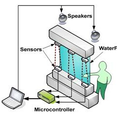
Nemo
In Nemo is er een interactief spel gemaakt dat gaat over meteorieten. Door middel van dit spel kon je ook meer leren over de meteorieten en het heelal. Je moet als speler de aarde beschermen tegen de meteorietregen. Er zit boven je, aan het plafond, een sensor en er hing een groot scherm voor je. Op het scherm zag je hoe de meteorieten op de aarde afkomen. Met behulp van een soort schilden dat je boven je hoofd moet houden kan je deze afketsen. De sensor ziet dan namelijk waar jij staat.
Zelf heb ik dit spel ook gespeeld toen ik vorig jaar in Nemo was. Ik vond het een leuk spel en ook origineel bedacht met die schilden boven je hoofd. Wie precies de maker was, heb ik alleen helaas niet kunnen vinden, maar ik wilde deze alsnog graag in mijn research zetten, omdat ik hier misschien inspiratie voor mijn eigen ontwerp uit kan halen.
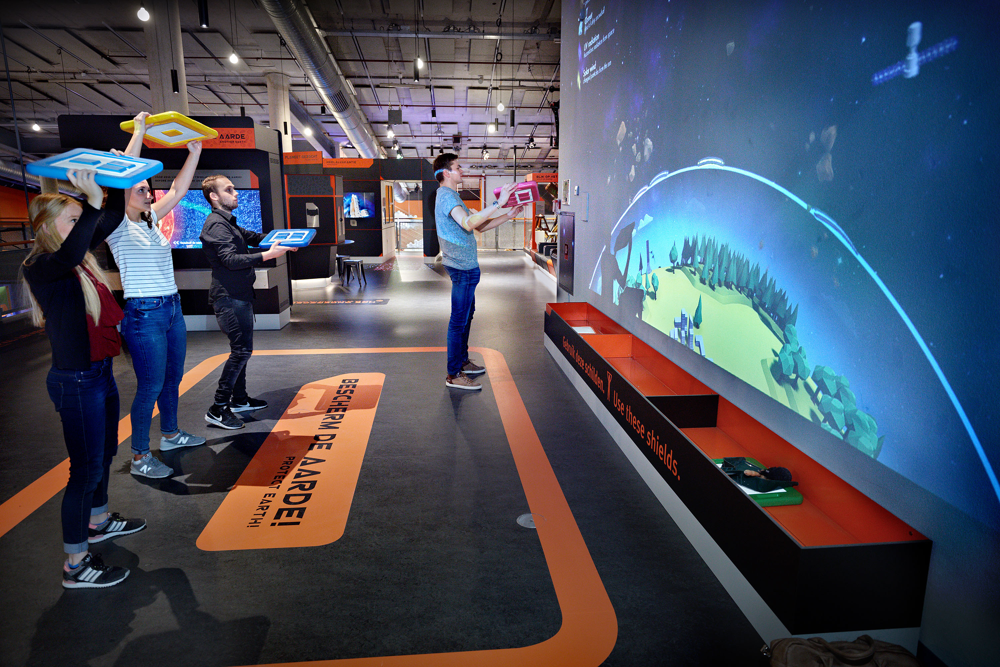
Tinkering
Kleuren ledjes en geluid
Voor de eerste opdracht van tinkering wilde ik een soort spelletje maken met de Arduino. Ik heb een opstelling gebouwd met drie verschillende kleuren ledjes en drie uiteindes die je kan aanraken waardoor je een geluidje hoort. De drie verschillende ledje branden random één voor één. Het is de bedoeling dat je dan het goede uiteinde van de draadjes pakt die bij dat leur ledje hoort.
Bekijk het filmpje voor een betere demonstratie. Zorg dat je geluid aan staat.
Smiley
Voor mijn tweede tinkering demo heb ik gebruik gemaakt van de 8x8 led en de speaker van Arduino. Ik wild meer experimenteren met figuren en liedjes en zorgen dat er steeds iets anders gebeurd als je de verschillende uiteindes van het ciruit pakt. Wanneer je het oranje draadje pakt, zie je een blije smiley en hoor je een vrolijk deuntje. Bij het witte draadje zie je een boos gezicht en hoor je een meer boze toon en bij het paarse draadje zie je een neutraal gezicht met een neutraal deuntje.
Bekijk het filmpje. Zorg er wederom voor dat het geluid aan staat.
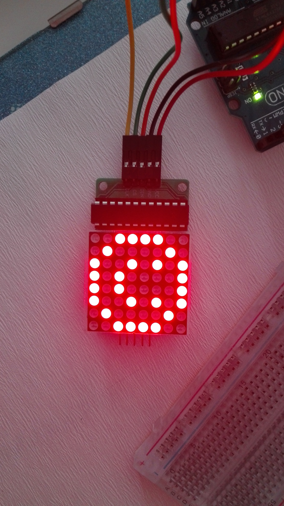
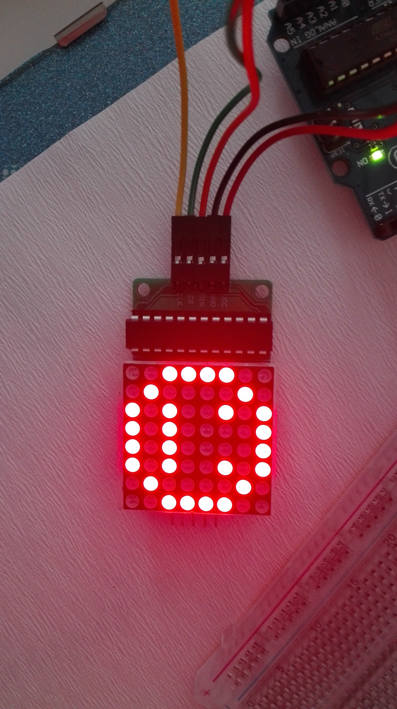
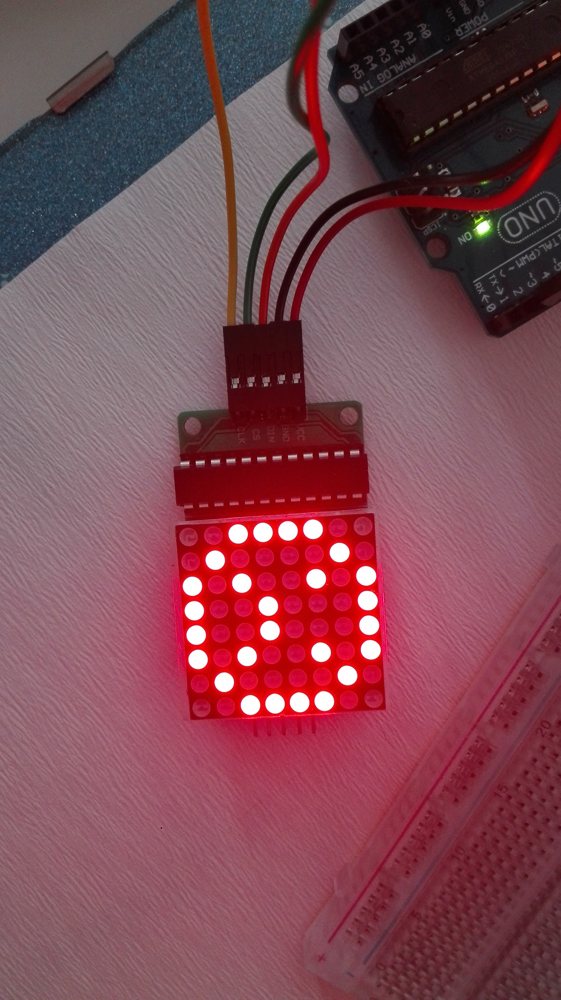
Interactief museum
Voor mijn derde demo heb ik een interactief museum gemaakt. In een museum kan je namelijk veel dingen leren, maar meestal wordt een museum ook gezien als saai. Door er leuke verrassingen in te doen trek je de aandacht van mensen en leren ze ook weer nieuwe dingen. Vandaar dat ik hoort bij playful interactions.
Filmpje van mijn museum
Loop ook zelf door het museum.

Design and Build & Showcase
Voor mijn eindontwerp heb ik ervoor gekozen om een soort tekening te maken, alleen dan natuurlijk met een speels effect. Eerst wilde ik dit doen met behulp van een soort verf dat je kan maken, maar dit was helaas niet helemaal gelukt. De elektriciteit werd namelijk niet goed genoeg geleid, en ontstond te veel weerstand, waardoor het ledje bijna niet ging branden. Dus ik moest opzoek naar een ander alternatief.
Ik heb uiteindelijk voor ijzerdraad gekozen, omdat hiermee de elektriciteit wel goed geleiden werd. Mijn uiteindelijke tekening kan je ophangen aan de muur, maar tegelijkertijd ook mee spelen. Dit is daarom een vorm van playful interaction, voor vermaak en plezier.
Wanneer je de tekening aanraakt (het ijzerdraad dan), gebeuren er verschillende dingen. Wanneer je één van de hartjes aanraakt gaat het rode ledje branden, als je een muzieknoot aanraakt komt er muziek, ook bij één van de sterren hoor je muziek en bij de andere ster gaat hij draaien. Door deze interactie in de tekening, wordt de tekening nog ietsjes bijzonderder.
Bekijk hier het fimpje van mijn tekening! (Zorg dat het geluid (hard) aanstaat.)
Reflect
Playful interaction in het algemeen
Playful inteaction is denk ik een goede manier om mensen dingen te laten doen die ze misschien niet uit zichzelf zouden doen. Dat zag je helemaal goed bij het voorbeeld van de flessen inname. Ook kan het gedrag door mensen zo beïnvloed worden, door bijvoorbeeld vaker de trap te nemen in plaats van de roltrap. Wat natuurlijk goed is voor de gezondheid!
Naast de meer 'nuttige' toepassingen kan playful interaction ook gebruikt worden voor de lol. Dit heb ik dan ook zelf toegepast op mijn eindproduct.
Mijn eindontwerp
Mijn eindproduct is een tekening, met interactie. Een normale tekening hang je gewoon op en kijk je misschien af en toe naar, maar met mijn tekening kan je een soort van spelen. Het maakt geluidjes, beweegt en er gaat ligt branden als je een hartje aanraakt. Dit alles maakt dat de tekening meer bijzonder wordt.
Gebruikte technologie
Bij het tinkering en eindopdracht heb ik weer veel gebruik gemaakt van mijn Arduino. Wel was het lastig bij mijn eindproduct om steeds alle ijzerdraadjes goed te bevestigen, want die vielen er nog al snel uit helaas. Ook had ik weer gebruik gemaakt van Adobe XD, waar ik mijn interactieve museum in heb gemaakt.


 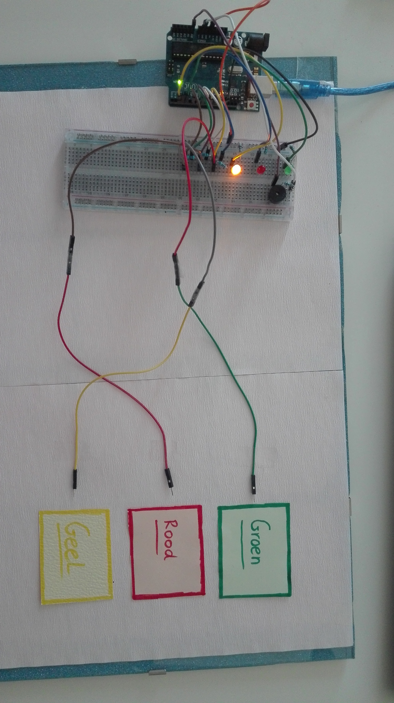
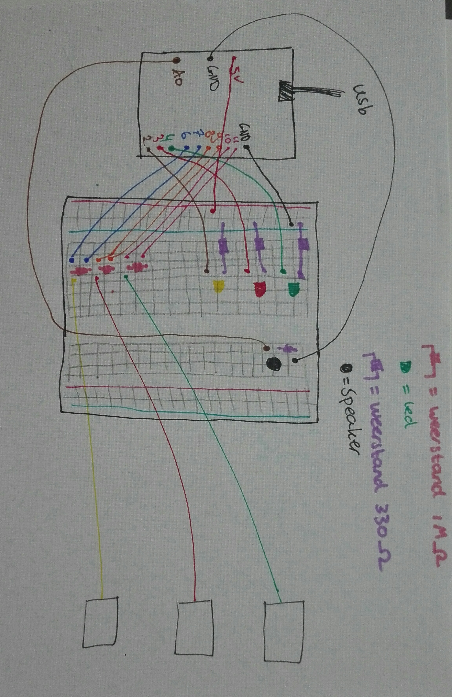
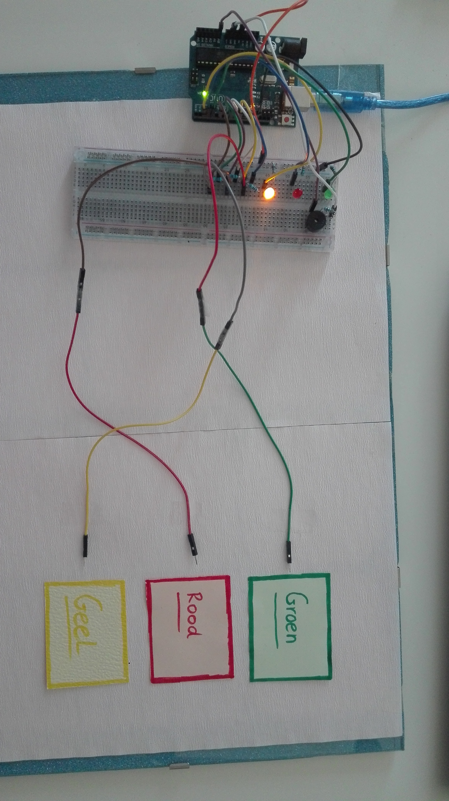
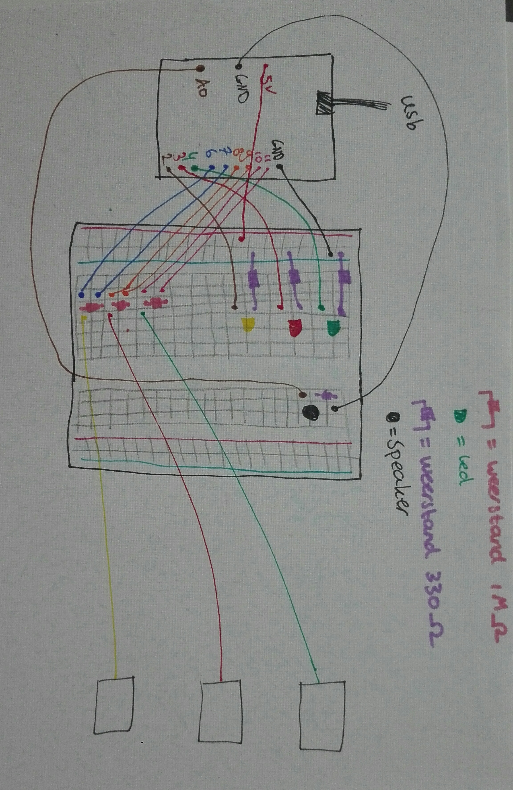


 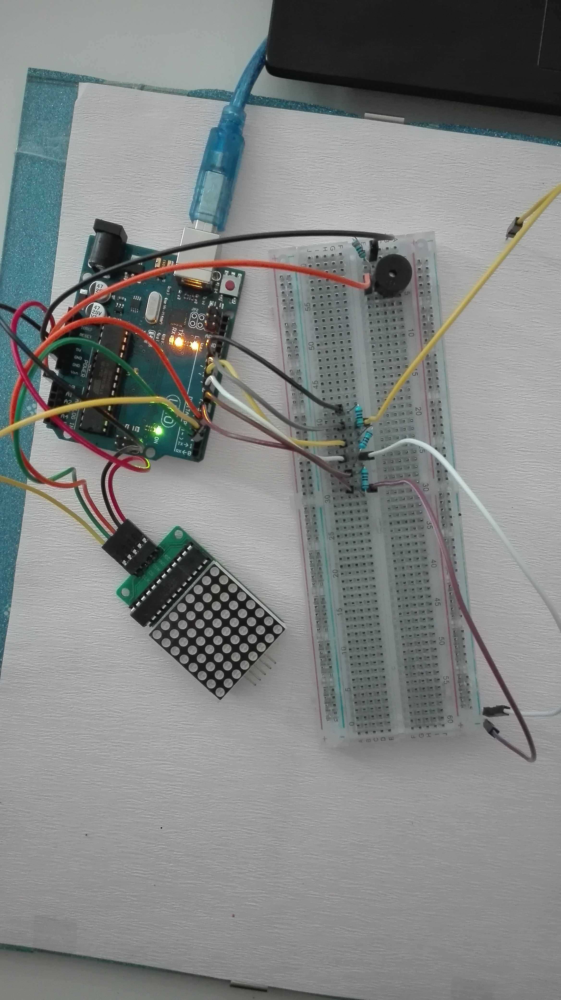
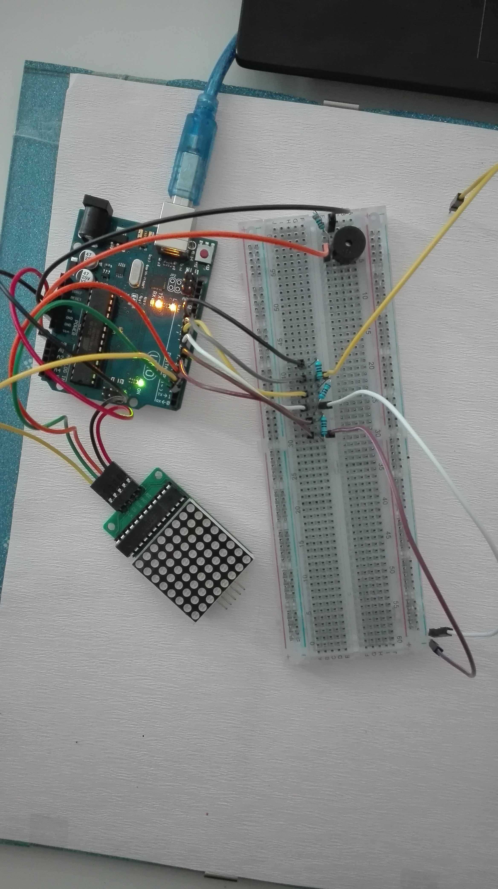


 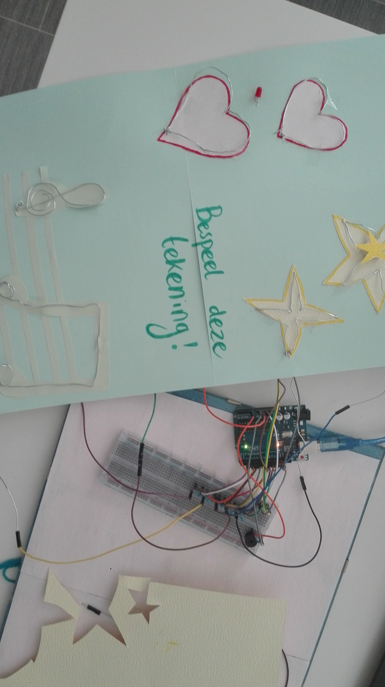
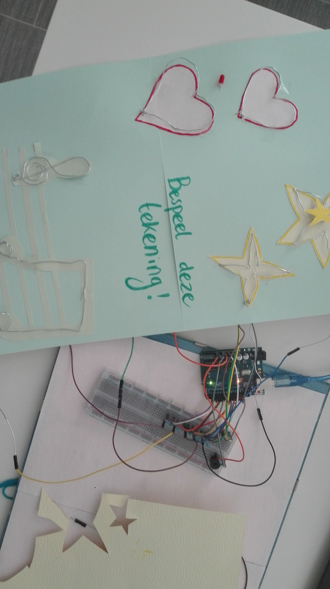